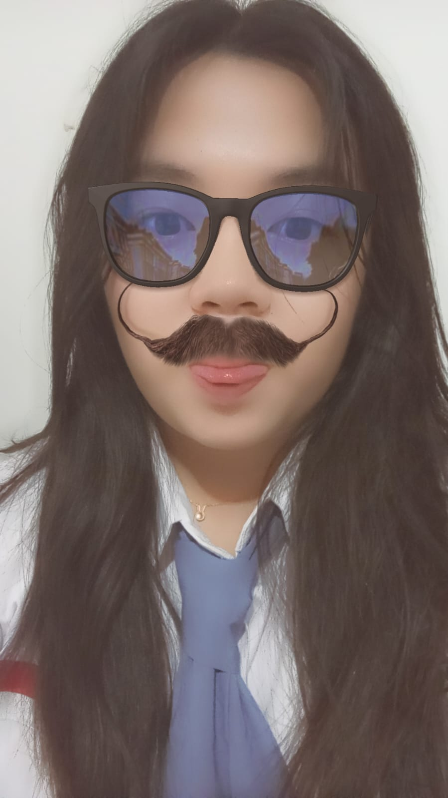

Halo, Nama saya Vellycia Jeslyn
Siswa kelas X TKJ 1 - SMK Kristen Immanuel Pontianak
Hobi saya bermain game, bermain basket, mendengarkan lagu, dan menonton films atau series
cit cita saya adalah menjadi gamer atau web developer, saya memilih jurusan TKJ karena saya ingin lebih tau banyak hal tentang teknologi.